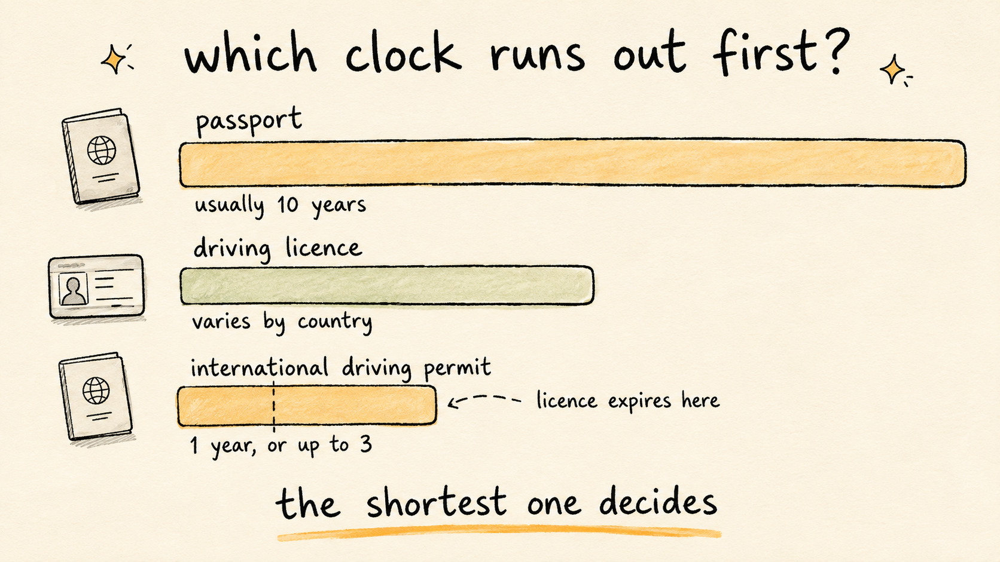

International Driving Permit: How Long Yours Actually Lasts
Travel Document Vault
Key Takeaways
- An IDP is a translation of the licence you already hold, so you carry both. Handing over the permit on its own proves nothing.
- There are three kinds, from three treaties, though two cover nearly everywhere. A 1949 Geneva permit lasts one year. A 1968 Vienna permit runs up to three.
- The Vienna permit is capped by your driving licence. If the licence expires first, the permit stops being useful on that date, whatever is printed on it.
- Countries ratified different conventions, so a permit accepted in one country can be refused in the next.
- Passport, licence and permit run on three separate clocks that almost never line up.
An International Driving Permit is a translation of a licence, not a licence in its own right, and it runs on its own clock. Most are valid for twelve months from the date of issue, so the one bought for a trip three summers ago has almost certainly run out. Hire desks in several countries ask for it before releasing a car.
An IDP carries its own expiry date, and that date behaves differently depending on which international treaty your permit was issued under. Most drivers never discover there is more than one kind until theirs is turned down.
What an IDP Actually Is
An International Driving Permit is an official translation of the licence you already hold. It sets out your details in several languages so an officer who can't read your national licence can still work out what you're entitled to drive.
So it functions as a pair. You carry the domestic licence and the permit together and present both. Alone, the permit establishes nothing, because there's no licence behind it for the permit to translate.
This catches people out more often than the expiry dates do. The permit looks like the serious document, all stamps and languages, so it feels like the one that matters.
Three Treaties, and the Two That Matter
Three international agreements sit behind IDPs, and countries signed up to one of them or to several. Two do nearly all the work: the 1949 Geneva Convention and the 1968 Vienna Convention. An older 1926 Paris Convention permit is still issued for a small number of destinations, and like the Geneva permit it runs for a year.
A permit issued under the 1949 Geneva Convention is valid for one year. A permit issued under the 1968 Vienna Convention can run for up to three.
The split matters twice over. It sets how long your permit lasts, and it decides where the permit is honoured. A country that ratified only one convention isn't obliged to recognise a permit issued under the other, which is how a permit that worked on last year's trip gets waved away on this one.
| Permit type | How long it lasts | What limits it |
|---|---|---|
| 1926 Paris Convention | One year | The issue date. Rarely needed now |
| 1949 Geneva Convention | One year | The issue date |
| 1968 Vienna Convention | Up to three years | Your domestic licence, if it expires sooner |

The Three-Year Permit That Often Isn't
Those three years carry a condition that's easy to skim past. A Vienna permit expires when your domestic driving licence expires, if that date comes first.
Say your licence has 14 months left and you're issued a three-year permit. The permit is useful for 14 months. The date printed on the front doesn't outrank the licence sitting behind it.
Renewing the licence afterwards doesn't rescue the permit either. It stays tied to the licence it was issued against, so a fresh licence generally means a fresh permit.
Three Documents, Three Clocks
A passport, a driving licence, and often a permit: anyone driving abroad ends up carrying all three, each issued by a different office on its own timetable, so their expiry dates rarely line up.
Adult passports commonly run 10 years, while licence validity varies widely by country and many require renewal on a fixed cycle or once you pass a certain age. Add a Geneva permit at 12 months, or a Vienna permit at up to three years and sometimes considerably less, and you're juggling three separate calendars, not one.
Nothing tells you when the shortest of those runs out. Your licensing authority writes to you about the licence, and the passport reminder, if you set one, sits in your calendar, but the permit usually has nobody watching it at all, because it was bought for one holiday and then filed in a drawer.
The passport is usually the date people do track, and there's a reason for that: the rules attached to it are stricter and better known. If you want the detail on that clock specifically, our guide to how long a passport stays valid for travel covers the months-of-validity requirements that catch people out at check-in. The licence and the permit rarely get the same attention, which is why they're the ones that lapse.
That's the practical argument for keeping all three dates in one place. Travel Document Vault, on the App Store and Google Play, stores the documents on your device and tracks each expiry on its own, so the permit doesn't lapse quietly while you're keeping an eye on the passport.
What to Check Before You Book
A few things are worth checking, roughly in this order.
Whether you need a permit at all. Some countries accept a domestic licence on its own, and the country you're driving in sets the requirement, not the one that issued your licence.
Which convention your destination recognises, then which one your permit was issued under. It's printed on the document.
Your licence expiry, before your permit expiry. On a Vienna permit the licence is the binding date, so checking the permit first tells you less than you think.
The hire company's own policy. Companies can ask for more than the law requires, and the person at the counter enforces the policy in front of them rather than the treaty.
Sorting this out takes an afternoon before you book. Sorting it out at a rental desk in another country, with a queue behind you, generally isn't possible at all.
You Generally Can't Sort It Out After You've Left
An IDP is issued by the country that issued your licence. That's the part which turns a small oversight into a cancelled booking, because it means the permit is something you arrange before departure rather than something you pick up on arrival.
Once you've landed, your options narrow to whatever the hire company will accept, and they're under no obligation to accept anything. Some will hand over the keys on a domestic licence alone, while others won't, and a booking paid for in advance doesn't change that.
The application itself is usually undemanding. Expect to supply your licence details and a passport-style photograph, and expect the permit to be issued fairly quickly, though who handles it varies: in some countries it's a motoring organisation, in others a post office or the licensing authority itself. Check what applies where your licence was issued, and allow for post if the permit is mailed rather than handed over.
Where this bites hardest is a trip booked at short notice. The permit is rarely the problem on its own. It becomes the problem when it's the last item on a list that's already tight.
Be Careful What You're Buying Online
Search for an International Driving Permit and you'll find sites selling something called an international driving licence, often for considerably more than the official permit costs, sometimes promising instant delivery or a decade of validity.
No such licence exists. The only documents with standing are the permits issued under the 1926, 1949 and 1968 conventions, through the channel your own country designates. Three years on a Vienna permit is the longest any of them runs, so anything advertising 10 or 20 years is describing a document no border official is obliged to accept.
Find out which body issues permits in the country that issued your licence, and go to that body. If a site won't tell you which convention its document is issued under, that answers the question.
If you're building a wider pre-trip list rather than sorting the driving side alone, our international travel document checklist runs through what to gather before you fly, and the documents people forget covers where each one is best kept once you're moving.
Before you rely on this: it's a blog, not an official source. Rules and details change, and your situation may be different. We check what we publish, and we can still be wrong or out of date. If something here matters to your plans, confirm it with the authority that handles it before you act.
Frequently Asked Questions
Do I need an International Driving Permit?
It depends where you're driving and which licence you hold. Some countries accept your domestic licence on its own, others want an IDP alongside it. The country you're driving in sets the requirement, not the one that issued your licence, so check for your specific destination and nationality before you travel.
How long is an International Driving Permit valid for?
The treaty it was issued under decides that. A permit issued under the 1949 Geneva Convention is valid for one year. A permit issued under the 1968 Vienna Convention can run for up to three years, though it expires sooner if your domestic driving licence expires first.
Does an International Driving Permit replace my driving licence?
No. An IDP is an official translation of your existing licence rather than a licence in its own right. You carry both and present both, and handing over the permit on its own is much the same as handing over nothing.
Can my IDP stop being valid before the date printed on it?
Yes, if it's a 1968 Vienna permit. That type is capped by your domestic licence, so if your licence expires in eight months, the permit stops being useful then, whatever three-year date appears on the document.
Why is there more than one type of International Driving Permit?
They come from separate international treaties. Most travel is covered by the 1949 Geneva Convention and the 1968 Vienna Convention, and an older 1926 Paris Convention permit is still issued for a small number of destinations. Countries ratified different ones, which is why a permit accepted in one country can be refused in another.